Unit Overhaul
DISASSEMBLY/ASSEMBLY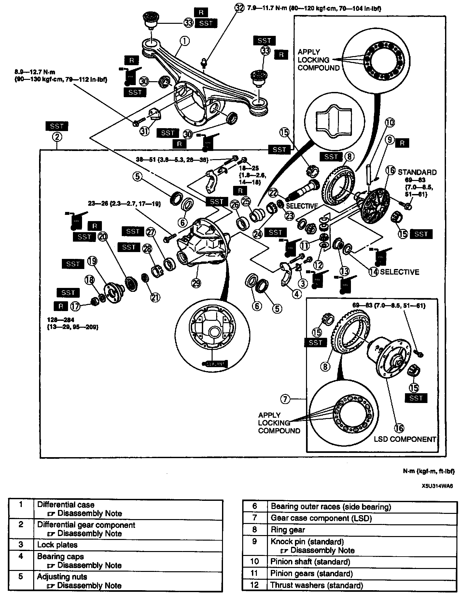
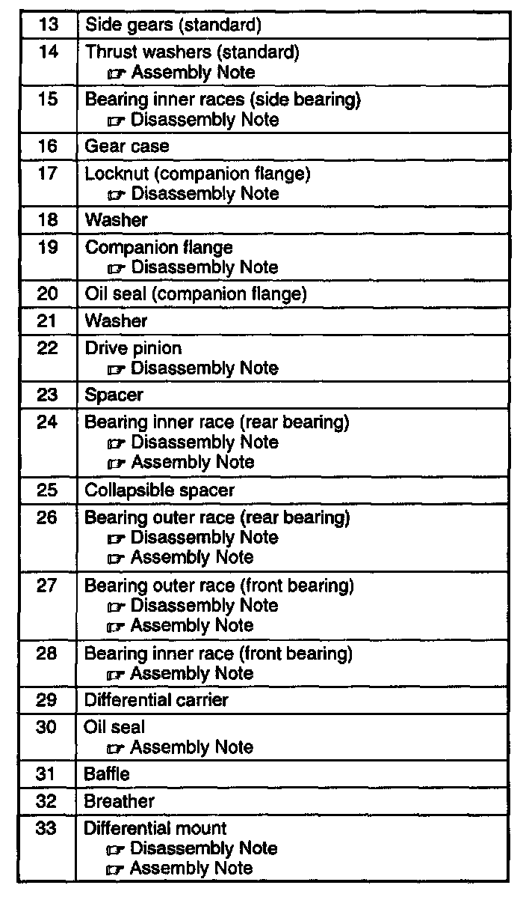
1. Disassemble in the order shown in the figure indicated in the table.
2. Assemble in the reverse order of disassembly.
Differential Case Disassembly Note
Caution:
- The differential case is made of aluminum, and is therefore easily dented and scratched by metal tools. When separating the differential carrier from the case, use only a plastic hammer at the point shown in the figure.
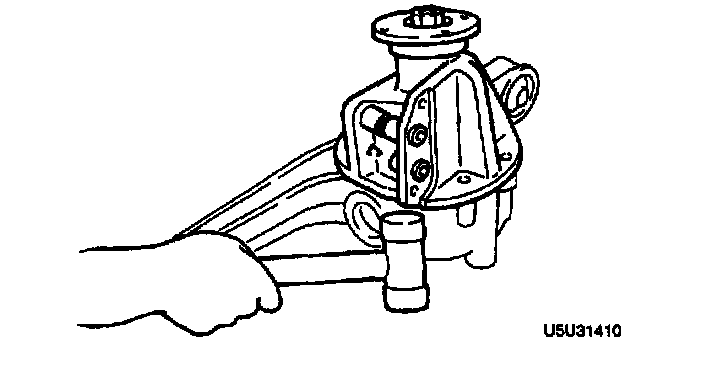
- Strike the differential with a plastic hammer to separate it from the case.
Deferential Gear Component Disassembly Note
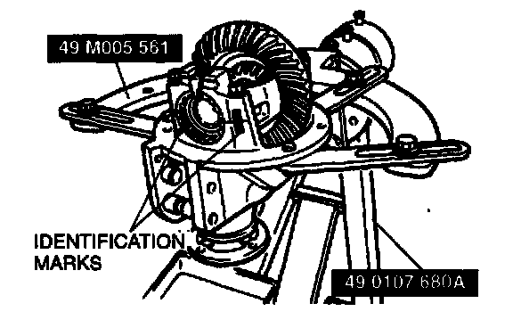
- Mount the differential gear component on the SSTs
Bearing Caps Disassembly Note
- Mark one bearing cap and the carrier.
Adjusting Nuts Disassembly Note
- Mark one adjusting nut and the carrier.
Knock Pin (Standard) Disassembly Note
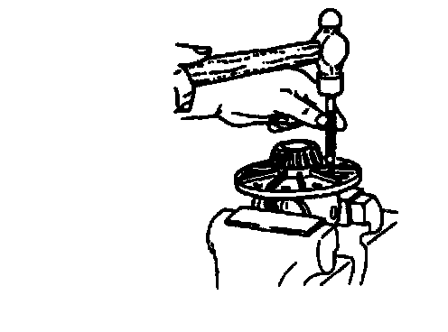
- Secure the gear case in a vise and tap out the knock pin toward the ring gear side.
Bearing Inner Races (Side Bearing) Disassembly Note
Note:
- Mark the bearings so that they can later be reinstalled in the same position.
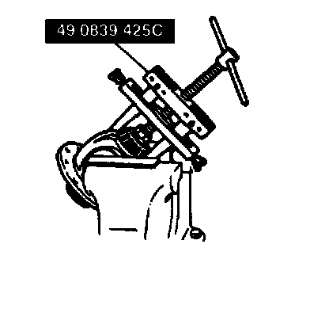
- Remove the bearing inner races (side bearing) from the gear case by using the SST.
Locknut (Companion Flange) Disassembly Note
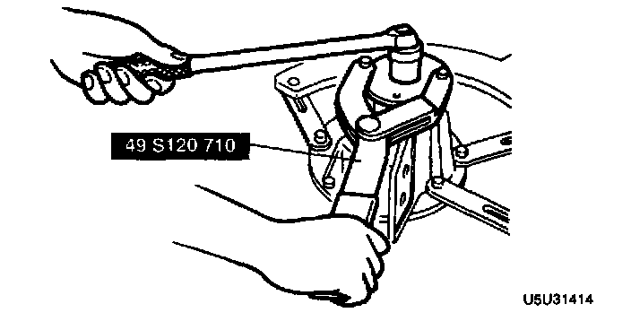
- Hold the companion flange by using the SST and remove the locknut.
Companion Flange Disassembly Note
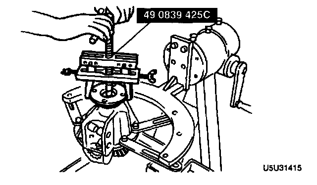
- Pull the companion flange off by using the SST.
Drive Pinion Disassembly Note
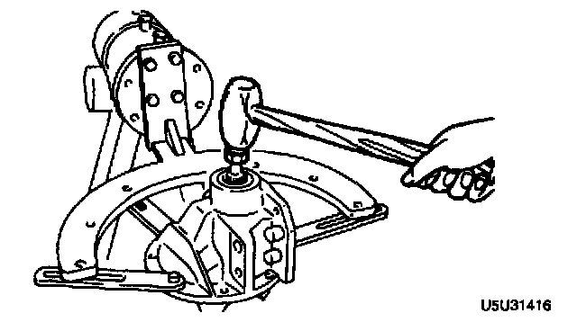
- Push out the drive pinion by attaching a miscellaneous locknut to the drive pinion, and tapping it with a copper hammer.
Bearing Outer Races (Front And Rear Bearing) Disassembly Note
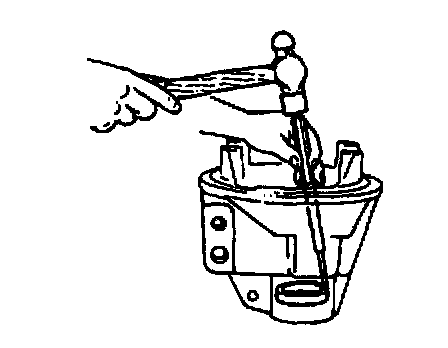
- Remove the bearing outer races by using the two grooves in the carrier and alternately tapping the sides of the races.
Bearing Inner Race (Rear Bearing) Disassembly Note
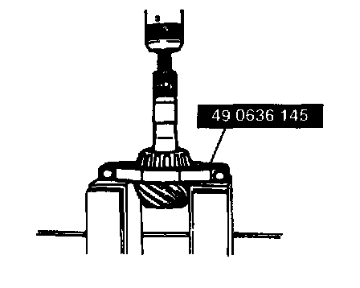
- While supporting the drive pinion to keep it from falling, remove the bearing inner race (rear bearing) by using the SST.
Differential Mount Disassembly Note
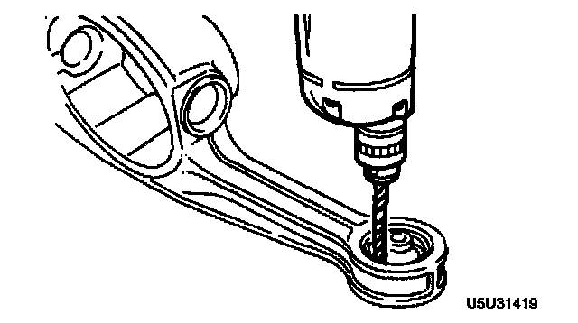
1. Drill holes around the differential mount.
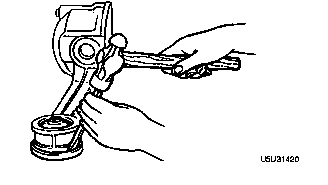
2. Hit the edge of the differential mount to remove it.
Differential Mount Assembly Note
1. Install the new differential mount with the voids facing front and rear.
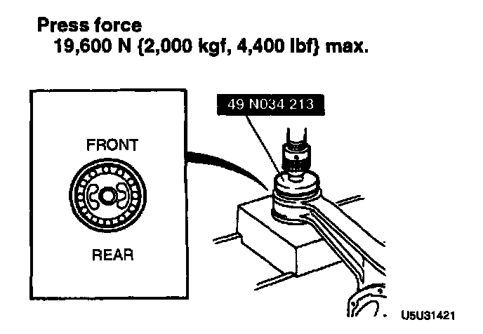
2. Press in the differential mount by using the SST.
Press force 19,600 N (2,000 kg, 4,400 lbs.)maximum,
Oil Seal Assembly Note
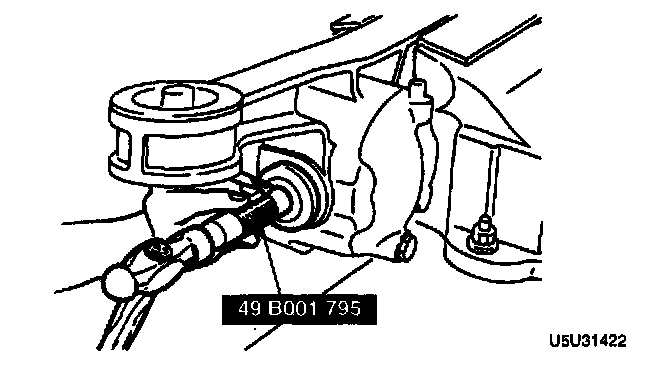
- Apply differential gear oil to the new oil seal lip and install it by using the SST.
Bearing Outer Race (Front Bearing) Assembly Note
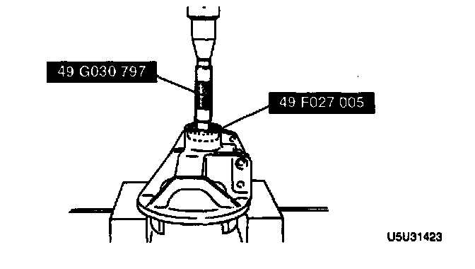
- Install the bearing outer race (front bearing) by using the SSTs.
Bearing Outer Race (Rear Bearing) Assembly Note
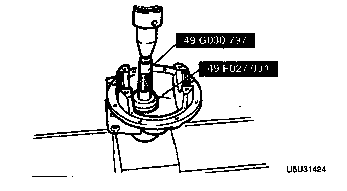
- Install the bearing outer race (rear bearing) by using the SSTs
Bearing Inner Race (rear Bearing), Bearing Inner Race (front Bearing) Assembly Note
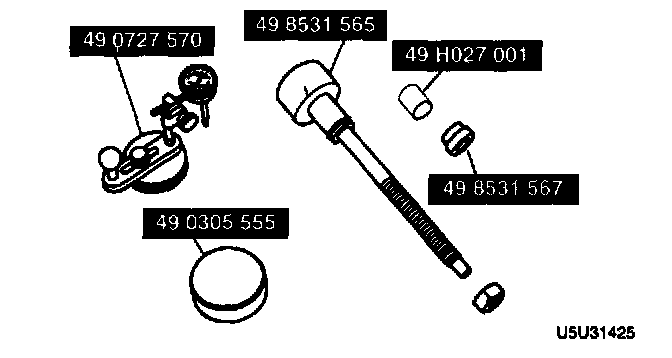
1. Adjust the drive pinion height as follows, by using the SSTs.
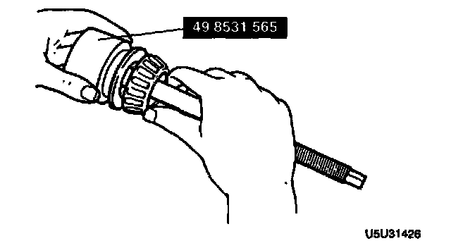
1) Install the previously-removed spacer onto the SST so that the beveled side of the spacer faces the drive pinion. Then install the rear bearing and O-ring onto the SST/spacer as shown in the figure.
2) Assemble the spacer, bearing inner race (rear bearing), and SSTs.
3) Secure the SST with the O-ring. Install this assembly in the carrier.
4) Install the bearing inner race (front bearing), the SST, companion flange, washer, and nut.
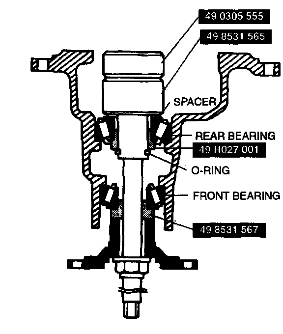
5) Tighten the nut just enough so that the companion flange can still be turned by hand.
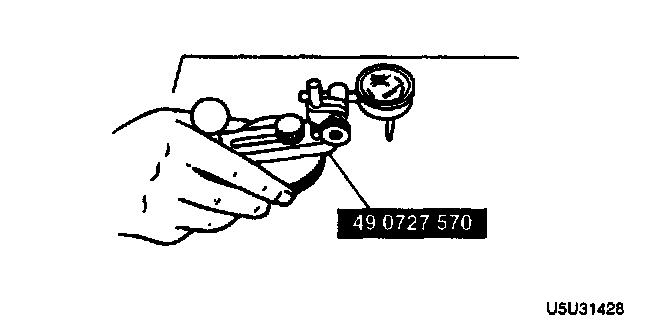
6) Place the SST on the surface plate and set the dial indicator to "Zero".
7) Place the SST atop the drive pinion model. Set the gauge body atop the gauge block.
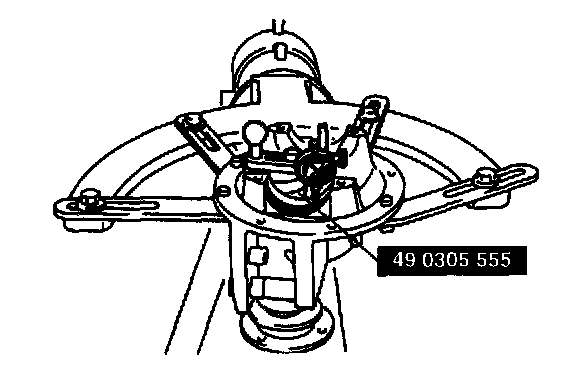
8) Place the feeler of the dial indicator so that it contacts where the bearing inner race (side bearing) is installed in the carrier. Measure the lowest position on the left and right sides of the carrier.
Note:
- The number is inscribed on the end of the drive pinion.
9 Add the two (left and right) values obtained by the measurements taken in step (8), and then divide the total by 2. From this result, subtract the result obtained by dividing the number inscribed on the end surface of the drive pinion by 100. (If there is no figure inscribed, use 0.) This is the pinion height adjustment value.
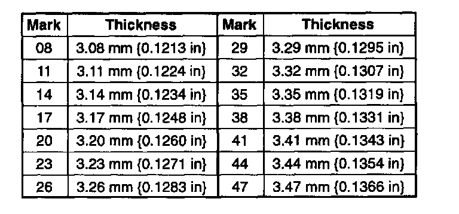
Note:
- The identification number is indicated on the outer side of the washer.
2. Install the spacer, selected in the procedure above, with the beveled side facing the drive pinion.
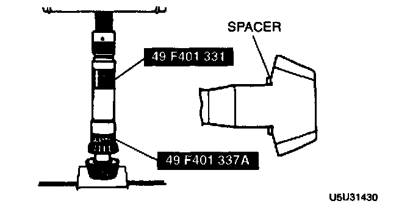
3. Using the SSTs, press the bearing inner race (rear bearing) onto the drive pinion until the force required starts to increase sharply.
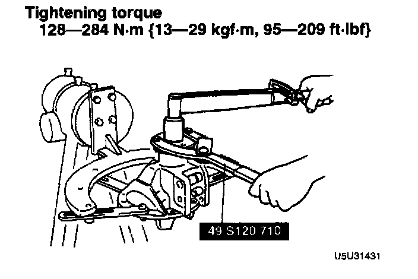
4. Without installing the oil seal, install the drive pinion, spacer, new collapsible spacer, front bearing, washer, and companion flange to the carrier, and temporarily tighten the locknut by using the SST.
Tightening torque 128-284 Nm (13-29 kg-m, 95-209 ft. lbs.)
5. Turn the companion flange several turns by hand to seat the bearing.
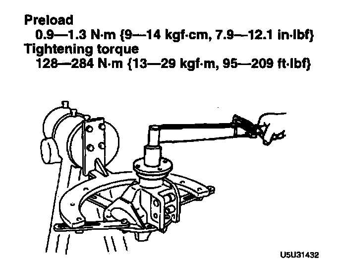
6. Measure the drive pinion preload. Adjust the preload by tightening the locknut, and record the tightening torque.
Preload 0.9-1.3 Nm (9-14 kgf-cm, 7.9-12.1 inch lbs.)
Tightening torque 128-284 Nm (13-29 kg-m, 95-209 ft. lbs.)
7. Remove the locknut, washer, and companion flange.
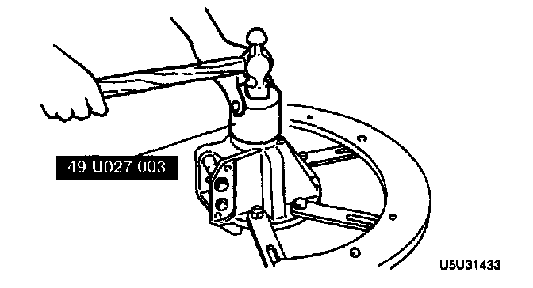
8. Tap a new oil seal into the differential carrier with the SST.
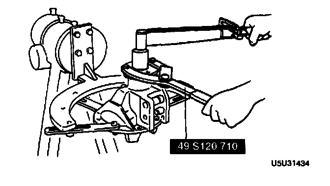
9. Install the companion flange and washer while holding the flange with the SST, and tighten a new locknut to the tightening torque recorded in step 6.
Thrust Washers (Standard) Assembly Note
1. Adjust the backlash of the side gears and pinion gear as follows.
1) Set a dial gauge against the pinion gear as shown.
2) Secure one of the side gears.
3) Move the pinion gear, and measure the backlash at the end of it.
Standard backlash 0 0.1 mm (0-0.0039 inch)
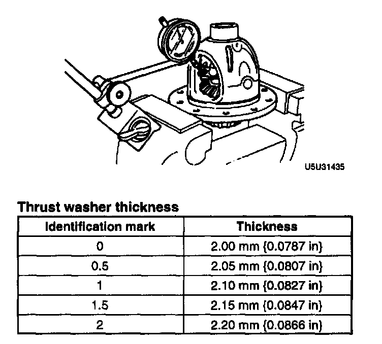
4) If the backlash exceeds the standard, use the selectable thrust washers for adjustment.
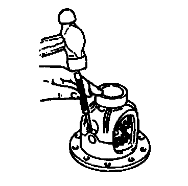
2. Install the new knock pin to secure the pinion shaft. Stake the pin with a punch to prevent it from coming out of the case.
3. Apply thread-locking compound to bolt threads A and points B of the gear back face. Apply approximately 0.04 cm3 (0.04 cc, 0.0024 cu inch) of thread-locking compound at each point and bolt thread.
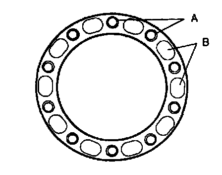
4. Install the ring gear onto the gear case.
Tightening torque 69-83 Nm (7.0-8.5 kg-m, 51-61 ft. lbs.)
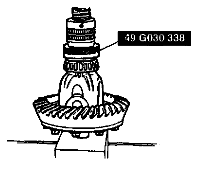
5. Press the bearing inner races (side bearing) on by using the SST.
6. Install the differential gear component in the carrier.
7. Note the identification marks on the adjusting nuts, and install them on their respective sides.
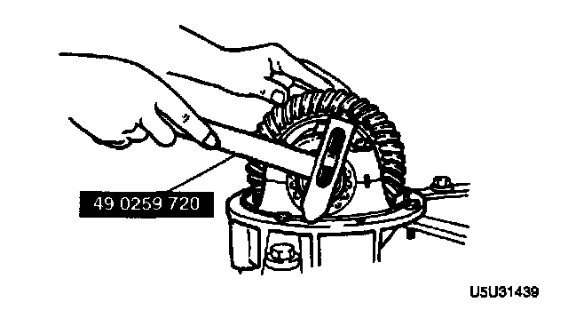
8. Install the differential bearing caps, making sure that the identification mark on the cap corresponds with the one on the carrier, by using the SST. Then temporarily tighten the bolts.
1) Mark the ring gear at four points at approx. 90° intervals. Mount a dial indicator to the carrier so that the feeler comes in contact at a right angle with one of the ring gear teeth.
2) Turn both bearing adjusters equally by using the SST until the backlash is 0.09-0.11 mm (0.0035-0.0043 inch).
3) Inspect for the backlash at the three other marked points, and make sure the maximum backlash is less than 0.07 mm (0.0028 inch).

9. Tighten or loosen the adjusting nuts equally until the distance between the pilot sections on the bearing caps is 185.428-185.50 mm (7.3003-7.3031 inch).
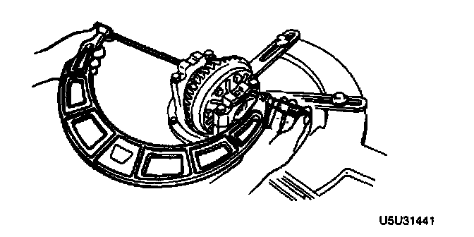
10. Reinspect for the backlash.
11. Inspect the teeth contact as follows.
1) Coat both surfaces of 6-8 teeth of the ring gear with a thin coat of red lead.
2) While moving the ring gear back and forth by hand, rotate the drive pinion several times and inspect the tooth contact.
3) If the tooth contact is good, wipe off the red lead.
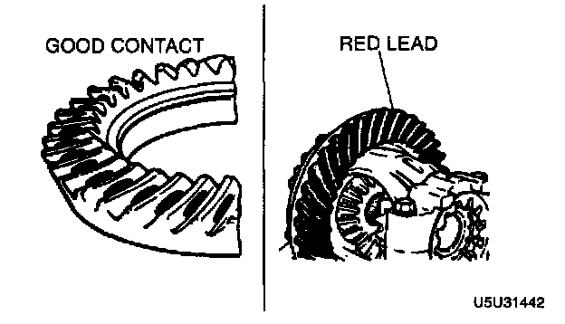
4) If it is not good, adjust the pinion height, and then adjust the backlash.
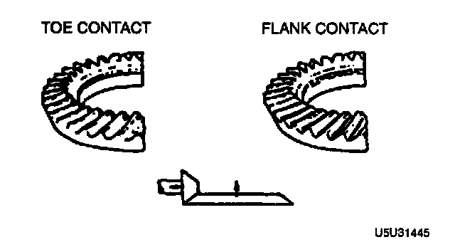

(1) Inspect the toe and flank contact by replacing the spacer with a thinner one to move the drive pinion outward.
(2) Inspect the heel and face contact by replacing the spacer with a thicker one to bring the drive pinion in.